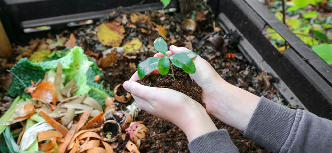

Beginner's Guide
8 min read
Composting 101: How to Turn Waste into Garden Gold
Learn the basics of composting, from what materials to use to how to maintain your pile for optimal results.
Natural Resources Defense Council

Urban Solutions
10 min read
Home Composting: A Complete Guide for Urban Dwellers
EPA's comprehensive guide to composting in small spaces, including apartment-friendly solutions.
U.S. Environmental Protection Agency
Climate Science
12 min read
How Composting Can Help Fight Climate Change
Discover how diverting organic waste from landfills reduces methane emissions and sequesters carbon.
National Geographic

Agricultural Science
15 min read
The Science Behind Composting: Microbes at Work
Explore the fascinating biology of composting and how microorganisms transform waste into nutrient-rich soil.
Successful Farming

Innovation
10 min read
Modern Composting Technologies Changing Waste Management
From smart bins to AI-powered sorting, discover how technology is revolutionizing composting.
Permaculture Research Institute

Research
20 min read
Large-Scale Composting: Solutions for Cities
Scientific review of municipal composting programs and their environmental benefits.
Journal of Cleaner Production